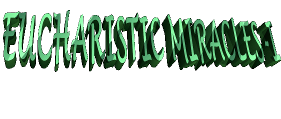

John have written and the New
Testament teaches that GOD made himself Man and came to inhabit among us,
incarnated in JESUS CHRIST, Second Person of the Holy Trinity.
John have written and the New
Testament teaches that GOD made himself Man and came to inhabit among us,
incarnated in JESUS CHRIST, Second Person of the Holy Trinity.

 CHRISTIAN TRUTH- The
four Evangelist: Matthews, Marcs, Luc and John have written and the New
Testament teaches that GOD made himself Man and came to inhabit among us,
incarnated in JESUS CHRIST, Second Person of the Holy Trinity.
CHRISTIAN TRUTH- The
four Evangelist: Matthews, Marcs, Luc and John have written and the New
Testament teaches that GOD made himself Man and came to inhabit among us,
incarnated in JESUS CHRIST, Second Person of the Holy Trinity.
JESUS executed a precious Mission of Love, redeeming the humanity for the ETERNAL FATHER and leaving the means for we are happiest here on the Earth and to achieve the eternal salvation in the Heaven. HE is present in the Sacraments and in the Ecclesiastic Priesthood, and also, HE is present by grace in each creature that follows HIM. Hidden at the eyes of the world, CHRIST is true GOD and true MAN, above all, is present in the Sacrament of the Eucharist, in Body, Blood, Soul and Divinity. The simple consecrated particle hides HIS divinity, glory and power; HE wants that we approach of HIM for love, without any interest or looking for some benefit. Also HE wants each one of us modestly poor in spirit and pure in intentions, sincerely sorry of all guilt by Sacrament of Confession, being conscious that in the Sacred Communion HE is Really Present and HE gives HIMSELF fully in the portion smallest of the sacrament, because HE is the GOD Alive and Truthful, Sacrament of Life and Love.
 THE UNBELIEVERS- Unhappily
there are many people that don't
THE UNBELIEVERS- Unhappily
there are many people that don't believe, don't accept and don't have
the smallest respect for this truth, interpreting the expression "banquet Eucharist" literally, "in the way that is written",
or to say, just as if it were a meal, memory of the last Dinner that the LORD had with the
Apostles in Jerusalem, and like this, they consider the Sacred Communion as a "symbol" JESUS� presence
and not as HIS Real and True Presence. They not believing, although being creatures like us, children of the same
CREATOR, with this proceeding they make your own life options and will have to assume
the consequences of your behavior.
believe, don't accept and don't have
the smallest respect for this truth, interpreting the expression "banquet Eucharist" literally, "in the way that is written",
or to say, just as if it were a meal, memory of the last Dinner that the LORD had with the
Apostles in Jerusalem, and like this, they consider the Sacred Communion as a "symbol" JESUS� presence
and not as HIS Real and True Presence. They not believing, although being creatures like us, children of the same
CREATOR, with this proceeding they make your own life options and will have to assume
the consequences of your behavior.
Almighty GOD sheds without interruptions, independently of our merit, an immense quantity of graces upon all generations. In HIS infinite kindness as FATHER, HE doesn't make distinctions and nor discriminations among persons �good or bad�, HIS graces are for everybody. The creatures with your freedom of choice may welcome or not �Divine donation� that HE sends us. We could to compare saying that the graces reception it happens as if it were a heart valve: there are people that open the heart to receive the graces and it exists others they stay closed at the countless benefits of GOD. Among those with the heart opened, there are a variety of loving intensity in the solicitation and reception of graces. There are those that open more your heart, are more available, more zealous, and sincere and too they are more faithful. There are still those that are more competent and thorough who cultivate the charity and a great love the GOD. However there are also those that open less the heart, they aren't punctual, don't possess a solid perseverance, they are impatient in the treatment with sacred things and not very available in the relationship with OUR LORD.
The Love of GOD is the same for all HIS children. But the people aren�t equals; they welcome him in different manners. For this reason, the persons receive graces of an unequal way; some receive many graces and others receive small quantity or nothing. In consequence, those which if open more and they are more dedicated they will receive more grace from the LORD.
 DEFINITIVE PROOF- The
Eucharist accomplishes the union of all Christians among themselves and of them with
GOD. For this reason, of a wonderful way the CREATOR comes to prove to world the
reality about the Eucharist by seer Julia Kim, for that the people might to believe in the
Christian Truth. In the Holy Mass, in the moment of the Consecration the supernatural
phenomenon of the �Transubstantiation�
happens, the bread and wine are transformed into the Body, Blood, Soul
and Divinity of the LORD, although staying the same exterior aspect of bread and wine.
The LORD�S Miracle to prove that the phenomenon happens is so: in the moment of the
Communion, the priest places the Consecrated Host in the seer's tongue and at the same
moment the Eucharist becomes in visible and impressive way the Body and Blood of the
LORD. People of the whole world have seen already the fact and have stayed admired
with the supernatural manifestation that proves the Real Presence of JESUS in the
HOLY EUCHARIST.
DEFINITIVE PROOF- The
Eucharist accomplishes the union of all Christians among themselves and of them with
GOD. For this reason, of a wonderful way the CREATOR comes to prove to world the
reality about the Eucharist by seer Julia Kim, for that the people might to believe in the
Christian Truth. In the Holy Mass, in the moment of the Consecration the supernatural
phenomenon of the �Transubstantiation�
happens, the bread and wine are transformed into the Body, Blood, Soul
and Divinity of the LORD, although staying the same exterior aspect of bread and wine.
The LORD�S Miracle to prove that the phenomenon happens is so: in the moment of the
Communion, the priest places the Consecrated Host in the seer's tongue and at the same
moment the Eucharist becomes in visible and impressive way the Body and Blood of the
LORD. People of the whole world have seen already the fact and have stayed admired
with the supernatural manifestation that proves the Real Presence of JESUS in the
HOLY EUCHARIST.
 FREQUENCY OF THE MANIFESTATIONS- The Eucharistic
FREQUENCY OF THE MANIFESTATIONS- The Eucharistic Miracles have repeated more than 20 times, in different
locales, inclusive in the Vatican, always causing admiration and emotion, by the greatness
and absolute clarity with which happens. Besides those, other Eucharistic manifestations
have happened by means of Julia Kim, also placing in evidence the Sacred Communion.
So, the seer picking up water in a font next to the Chapel, in the bottom of the recipient
(vessel) appeared the image of a Host of large size. On the roof of the Chapel was also seen
in several occasions, projected by the sunshine, the image of a Chalice and of a Host.
There are photos and several films about the phenomenon.
Miracles have repeated more than 20 times, in different
locales, inclusive in the Vatican, always causing admiration and emotion, by the greatness
and absolute clarity with which happens. Besides those, other Eucharistic manifestations
have happened by means of Julia Kim, also placing in evidence the Sacred Communion.
So, the seer picking up water in a font next to the Chapel, in the bottom of the recipient
(vessel) appeared the image of a Host of large size. On the roof of the Chapel was also seen
in several occasions, projected by the sunshine, the image of a Chalice and of a Host.
There are photos and several films about the phenomenon.
For that reason with the intention of testifying the Eucharistic phenomenon, we will give to follow details of the events, describing some of them.
 SEVENTH MIRACLE - It happened
in such circumstance, that the Catholic Church in the whole world became aware of the fact.
The Apostolic Pro Nuncio in Korea was present. The Archbishop from The Vatican informed
the spiritual Director of the seer Frei Raymond Spies and the other authorities that were
presents, that he was not there in the Chapel as a simple pilgrim, but he had come as an
official representative, in the celebration of the Eucharist of day November 24, 1994,
commemorative of the 2nd Birthday of the perfumed oil spill by OUR LADY'S image.
SEVENTH MIRACLE - It happened
in such circumstance, that the Catholic Church in the whole world became aware of the fact.
The Apostolic Pro Nuncio in Korea was present. The Archbishop from The Vatican informed
the spiritual Director of the seer Frei Raymond Spies and the other authorities that were
presents, that he was not there in the Chapel as a simple pilgrim, but he had come as an
official representative, in the celebration of the Eucharist of day November 24, 1994,
commemorative of the 2nd Birthday of the perfumed oil spill by OUR LADY'S image.
In the presence of Apostolic Nuncio everybody
prayed while our BLESSED MOTHER gave messages to Julia, preparing the
admirable miracle that soon went to happen. First OUR LADY asked her to receive
the blessing of Archbishop and of the Fr. Spies. Then SHE sent Saint Michael the
Archangel that it gave a Consecrated Host to Julia, for to take at the two prelates.
The Host that the Archangel brought was big, similar in size those that the priests
use in the celebrations of Masses. Saint Michael was not visible to the people in the
Chapel, was only seen by the seer that accompanied all his movements. However,
the people could see the Sacred Particle appear suddenly between the fingers of Julia.
In the Host the image of a Cross was among two alphabetic character: (Alpha) and (Omega), in the same way as
it appeared in a image of another miracle that happened on June 27, 1993. The Host
was already broken in two parts when Julia at received, for that reason, she was with
a part in the right hand and the other in the left hand. Suddenly, Julia has fallen at the
ground by the force of a powerful light that came from above, maintaining however,
the two pieces of the Sacred Host in your  hands. Following, she carefully
got up and gave to the Nuncio and Fr. Spies the two pieces. The prelates have received
Communion with one of the pieces, and with the other, have distributed in small
portions in order to give the Sacred Host to the people that were in the Chapel,
which were totally perplexed, full of admiration before the greatness of the events.
Although being an only part of a big Host, all the people in the Chapel, approximately
70 persons, have received the Communion. With many surprise the people have testified,
was simply an experience that challenged the human understanding and which
did remind them of the evangelical passage of the multiplication of the breads.
(Matthews 14.13-21)
hands. Following, she carefully
got up and gave to the Nuncio and Fr. Spies the two pieces. The prelates have received
Communion with one of the pieces, and with the other, have distributed in small
portions in order to give the Sacred Host to the people that were in the Chapel,
which were totally perplexed, full of admiration before the greatness of the events.
Although being an only part of a big Host, all the people in the Chapel, approximately
70 persons, have received the Communion. With many surprise the people have testified,
was simply an experience that challenged the human understanding and which
did remind them of the evangelical passage of the multiplication of the breads.
(Matthews 14.13-21)
In the moment that Julia received the small piece of the Sacred Communion in your tongue, the Particle grew and reached the size of a perfectly normal small Host. The Apostolic Nuncio saw the event and respectfully at removed and showed to the people in the Chapel. Following, he placed the Particle in a Pyx for preservation with objective to testify that supernatural manifestation. This Host is in the image of the little Monstrance.
Meanwhile, OUR LADY spoke for seer: the Consecrated Host that the Archangel had brought was to be consumed by a priest, but Saint Michael didn't allow and brought for the Chapel, because the priest was in sin and JESUS couldn't live in him. This reality reveals a very serious conclusion: during the Holy Mass, the people that are in sin and insist in receiving the Sacred Host, they don't truly receive the LORD, but only "a particle of wheat and water and their own condemnation".
Julia wanted to return for home in order
to write OUR LADY'S messages and to give to The Archbishop.
However, when leaving the Chapel, as she walked with difficulties because of the
pains of the crucifixion that she received in the body, our BLESSED MOTHER
called her again. Hearing the called, she came near VIRGIN MARY'S image.
She heard the MOTHER'S words and held in Nuncio's hands and of Fr. Spies.
Then OUR LADY asked if she wanted to receive the Sacred Communion by the
second time. In this opportunity the Archangel brought a smaller Host, equal
those that the faithful ones receive in the Holy Mass, and gave Communion the
seer. When she has received the Sacred Host in her tongue, the Particle
it assumed the vertical position, instead to stay in the horizontal position,
as is normal. The Archbishop seeing the Particle to appear of suddenly in the
seer's mouth and observing it was in the vertical position, at removed immediately
and showed to the people that still were in the Chapel. Many photos were done
to register the notable event. Then the Archbishop gave the Host to Fr. Spies
that placed in the same Pyx where were the others taking them for your residence
while the people went back to their homes silently. This Particle is also in the
Monstrance small.
to The Archbishop.
However, when leaving the Chapel, as she walked with difficulties because of the
pains of the crucifixion that she received in the body, our BLESSED MOTHER
called her again. Hearing the called, she came near VIRGIN MARY'S image.
She heard the MOTHER'S words and held in Nuncio's hands and of Fr. Spies.
Then OUR LADY asked if she wanted to receive the Sacred Communion by the
second time. In this opportunity the Archangel brought a smaller Host, equal
those that the faithful ones receive in the Holy Mass, and gave Communion the
seer. When she has received the Sacred Host in her tongue, the Particle
it assumed the vertical position, instead to stay in the horizontal position,
as is normal. The Archbishop seeing the Particle to appear of suddenly in the
seer's mouth and observing it was in the vertical position, at removed immediately
and showed to the people that still were in the Chapel. Many photos were done
to register the notable event. Then the Archbishop gave the Host to Fr. Spies
that placed in the same Pyx where were the others taking them for your residence
while the people went back to their homes silently. This Particle is also in the
Monstrance small.
Ended these events, the Apostolic Nuncio was astonished and impressed and so much excited who not has slept during three followed nights, he stayed thinking and remembering those extraordinary supernatural facts. He decided to examine the occurrences in Naju since the beginning in 1985, carefully and with the greatest attention, with the objective to prepare a dossier and to register the details and the sequence of the facts. At the same time, the Archbishop Victorinus Yoon of the Archdiocese of Kwangju, that embraces the Parish of Naju, formed a committee to set up an investigation process in order to collect and verify the document of the events, as initial part of the canonical process.


The Apostolic Nuncio examines the removed Host of the mouth of Julia. - Monstrance small with the Hosts.